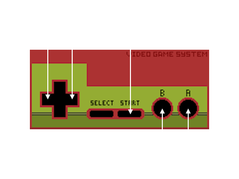

Battle Marine is a simple naval barrage STG.
Enjoy a somewhat retro yet new and exhilarating game experience by firing a barrage of shots, inducing
explosions, sweeping with powerful lasers, and automatically collecting medals (recovery and score) by
jumping.
Destroying enemies consecutively within a certain time frame will result in a HIT combo. Aim for 999 HITs!
Your rank will be assessed according to the results of your play. Aim for the rank of FLEET ADMIRAL!
This game can be played with a USB-connected gamepad (both XInput and DirectInput compatible) or keyboard.

Use the cursor keys to move left and right, press B to shoot, and A to jump.
Press and hold the B button to charge the laser, and release it when the charge is maxed out to fire the
laser.
Press A briefly for small jumps and long for large jumps.
Button assignments can be freely customized in the Key Config menu.
NOTE: The USB-connected gamepad may not be recognized properly in some environments.
In this case, disabling SteamInput in the Controller Settings of Battle Marine in the Steam may help.
The Steam version of Battle Marine is only available for a fee, but if you have a Raspberry Pi Zero 2W you can
try the Raspberry Pi version for
FREE.
If you like the Raspberry Pi version, please consider purchasing the Steam version.
There are no restrictions on the distribution of this game on TV, YouTube, or other video distribution sites.
Of course, there are no restrictions on monetization.
There is no need to contact the author prior to or after the event.
Similarly, there are no restrictions on publishing screenshots in magazines, web media, social media, etc.
This game is made with the SDK called VGS-Zero.
VGS-Zero is a virtual game machine with a powerful 16MHz Z80 CPU, old-fashioned VDP (Video Display Processor)
and VGS (chip-tuned sound system).
If you want to develop games like Battle Marine, please try to develop games with VGS-Zero.
NOTE: currently the Windows version of VGS-Zero is a special license (not OSS)
SUZUKIPLAN is considering future OSS, because SUZUKIPLAN loves OSS.
Copyright 2009-2010 Cybozu Labs, Inc. Copyright 2011-2014 Kazuho Oku All rights reserved. Redistribution and use in source and binary forms, with or without modification, are permitted provided that the following conditions are met: 1. Redistributions of source code must retain the above copyright notice, this list of conditions and the following disclaimer. 2. Redistributions in binary form must reproduce the above copyright notice, this list of conditions and the following disclaimer in the documentation and/or other materials provided with the distribution. THIS SOFTWARE IS PROVIDED BY THE COPYRIGHT HOLDERS AND CONTRIBUTORS "AS IS" AND ANY EXPRESS OR IMPLIED WARRANTIES, INCLUDING, BUT NOT LIMITED TO, THE IMPLIED WARRANTIES OF MERCHANTABILITY AND FITNESS FOR A PARTICULAR PURPOSE ARE DISCLAIMED. IN NO EVENT SHALL THE COPYRIGHT HOLDER OR CONTRIBUTORS BE LIABLE FOR ANY DIRECT, INDIRECT, INCIDENTAL, SPECIAL, EXEMPLARY, OR CONSEQUENTIAL DAMAGES (INCLUDING, BUT NOT LIMITED TO, PROCUREMENT OF SUBSTITUTE GOODS OR SERVICES; LOSS OF USE, DATA, OR PROFITS; OR BUSINESS INTERRUPTION) HOWEVER CAUSED AND ON ANY THEORY OF LIABILITY, WHETHER IN CONTRACT, STRICT LIABILITY, OR TORT (INCLUDING NEGLIGENCE OR OTHERWISE) ARISING IN ANY WAY OUT OF THE USE OF THIS SOFTWARE, EVEN IF ADVISED OF THE POSSIBILITY OF SUCH DAMAGE.
The MIT License (MIT) Copyright (c) 2019 Yoji Suzuki. Permission is hereby granted, free of charge, to any person obtaining a copy of this software and associated documentation files (the "Software"), to deal in the Software without restriction, including without limitation the rights to use, copy, modify, merge, publish, distribute, sublicense, and/or sell copies of the Software, and to permit persons to whom the Software is furnished to do so, subject to the following conditions: The above copyright notice and this permission notice shall be included in all copies or substantial portions of the Software. THE SOFTWARE IS PROVIDED "AS IS", WITHOUT WARRANTY OF ANY KIND, EXPRESS OR IMPLIED, INCLUDING BUT NOT LIMITED TO THE WARRANTIES OF MERCHANTABILITY, FITNESS FOR A PARTICULAR PURPOSE AND NONINFRINGEMENT. IN NO EVENT SHALL THE AUTHORS OR COPYRIGHT HOLDERS BE LIABLE FOR ANY CLAIM, DAMAGES OR OTHER LIABILITY, WHETHER IN AN ACTION OF CONTRACT, TORT OR OTHERWISE, ARISING FROM, OUT OF OR IN CONNECTION WITH THE SOFTWARE OR THE USE OR OTHER DEALINGS IN THE SOFTWARE.